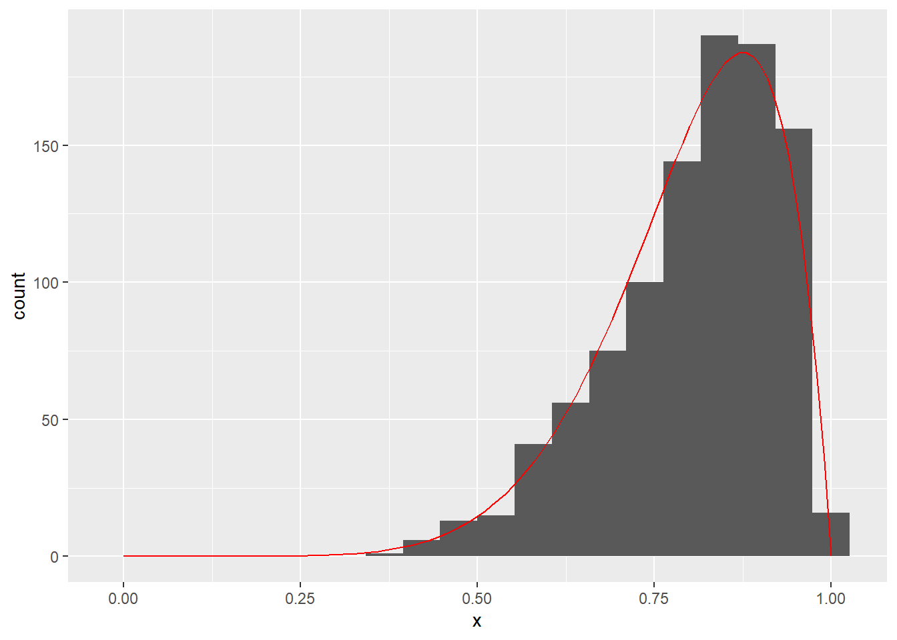

Chapter 5 Markov Chain Monte Carlo
Exercise 5.1 (Bayesian inference for logistic regression ) The goal of this problem is to implement a Metropolis-Hastings sampler for Bayesian logistic regression.
- Generate a toy dataset with 100 observations, each with 5 real-valued predictors \(x_1,...,x_5\) and a binary dependent variable \(Y\). All predictors are standard normal and \(Y_i \sim Bernoulli(\frac{1}{1 + e^{-\mu_i}}),\) where \(\mu_i = 3x_1 - 2x_2 + \frac{1}{10}x_3 + 1\). That is, we have a classification problem where only the first three predictors are relevant.
- Implement the logistic regression likelihood with an arbitrary number of coefficients (same as above, but \(\mu_i = \beta^Tx_i\), where \(x_i\) is now a vector) and combine it with a weakly-informative standard normal prior \(\beta_i \sim N(0, 100)\) to get a function that is proportional to the posterior distribution of the logistic regression model.
- Use your own implementation of Metropolis-Hastings with a standard normal proposal to infer the parameters on the toy dataset. Generate 4 independent chains from the posterior with 10000 samples each. Inspect traceplots, rejection rate and lag-k covariances and compute effective sample size (ESS) for each parameter. You may use a library for MCMC variance estimation. Discuss if there is some reason for concern that the Markov chain is problematic.
- Do your best to improve the efficiency of the sampler by changing the covariance matrix of the proposal distribution. Report the rejection rate and ESS for the most efficient M-H sampler you get. Compare with those obtained in (3) and discuss.
- Estimate posterior means of \(\beta_i\) using the most efficient sampler. Compare with the ground truth and a MLE fit of logistic regression (you may use a third party library for the GLM). Estimate the posterior probability \(P(|\beta_3| > \frac{1}{10}|\text{data})\).
Exercise 5.2 (Tuning the M-H sampler for the Banana function) Plot a contour plot of this function (it should look like a banana):
fn <- function(x) { exp(-(x[1]^2)/200- 0.5 * (x[2]+ 0.05 * x[1]^2 - 100*0.05)^2 ) }
The goal is to sample from the distribution whose density is proportional to the above function.
Implement a Metropolis-Hastings sampler. Below are three different proposal distributions. For each proposal distributin separately do the following: Draw 1000 samples from 3 different starting points (= 3 different chains). For each chain:
- plot the path of first 100 steps (over the contour plot; jitter rejected proposals so that they are visible),
- plot the traceplot and compute the ESS (for each of the two variables; you may use a library for MCMC variance estimation),
- and compute the rejection rate.
Proposal distributions:
- Sample uniformly from a square with side of length 1 and centered on the current state.
- Sample uniformly from a square with side of length 20 and centered on the current state.
- Why is it difficult to come up with an efficient M-H proposal distribution for this density?
- Suggest a proposal that will substantially outperform (a) and (b). Hint: Adapting the distribution to the location is a good idea, but do not forget to correct if they are asymmetric.
Exercise 5.3 (Exploring the behavior of MCMC) In this exercise we will focus on sampling from \(Beta(8, 2)\):
- Generate 1000 independent samples from using the built-in generator and plot the histogram. Overlap the histogram with an appropriately scaled Beta(8, 2) density.
- What is \(E[X]\) of \(X \sim Beta(8, 2)\)? Estimate it using the 1000 samples from (a) and estimate the approximation error. How many more samples do we need to increase precision by 1 decimal?
- How autocorrelated are the 1000 samples from (a)? What is their MCMC SE and what is their effective sample size?
- Sample 1000 samples using rejection sampling with a uniform envelope. Plot the samples and overlap the histogram with an appropriately scaled \(Beta(8, 2)\) density.
- How autocorrelated are the 1000 samples from (d)? What is their MCMC SE and what is their effective sample size?
- Sample 1000 samples using M-H. Use the proposal distribution \(x_{next} \sim \text{Uniform}(x_{current} - \delta, x_{current} + \delta)\), where \(\delta = 0.05\). Jumps outside of \((0, 1)\) are rejected. Start at \(0.5\).
- How autocorrelated are the 1000 samples from (f)? What is their MCMC SE and what is their effective sample size? What is the sample acceptance rate? Plot a traceplot.
- How do the quantities from (h) change if we set \(\delta = 0.01\) or \(\delta = 2.0\)?
- Find a better \(\delta\) using grid-search.
Solution. The solution is as follows:
- First, we sample using the build in sampler:
library(ggplot2)
set.seed(0)
x <- seq(0, 1, 0.01)
z <- rbeta(1000, 8, 2)
g1 <- ggplot(data.frame(x = z), aes(x = x)) + geom_histogram(bins = 20) +
annotate(geom = "line", x = x, y = 52 * dbeta(x, 8, 2), colour = "red")
plot(g1)
- We know the mean of a beta distribution is \(\frac{\alpha}{\alpha + \beta}\), which is in our case 0.8. We now estimate it using the sample average and compute the standard error:
mu <- mean(z)
SE <- sd(z) / sqrt(length(z))
print(mu)## [1] 0.8059453print(SE)## [1] 0.003804918To decrease the approximation error by factor 10, we need 100 times more samples.
- For the MCMC diagnostics, we'll reuse this function:
diagnostics <- function(z) {
library(mcmcse)
print("Autocorrelation for lags 1-10:")
print(round(acf(z, plot = F)$acf[1:10], 2))
cat(sprintf("Estimate: %.3f, MCMC SE: %.3f, Naive SE: %.3f, ESS: %.0f\n",
mean(z),
mcse(z)$se,
sd(z) / sqrt(length(z)),
ess(z)))
}
diagnostics(z)## Warning: package 'mcmcse' was built under R version 4.0.5## mcmcse: Monte Carlo Standard Errors for MCMC
## Version 1.4-1 created on 2020-01-29.
## copyright (c) 2012, James M. Flegal, University of California, Riverside
## John Hughes, University of Colorado, Denver
## Dootika Vats, University of Warwick
## Ning Dai, University of Minnesota
## For citation information, type citation("mcmcse").
## Type help("mcmcse-package") to get started.## [1] "Autocorrelation for lags 1-10:"
## [1] 1.00 -0.03 0.00 0.01 -0.03 0.00 0.00 -0.01 -0.04 0.01
## Estimate: 0.806, MCMC SE: 0.004, Naive SE: 0.004, ESS: 1000- Now we implement rejection sampling:
set.seed(0)
a0 <- 8
b0 <- 2
m <- 1000
# find maximum to use for envelope
res <- optim(0.5, fn = dbeta, lower = 0, upper = 1, method = "L-BFGS-B",
shape1 = a0, shape2 = b0, control = list(fnscale = -1))
M <- res$value
z_rej <- array(NA, dim = m)
for (i in 1:m) {
repeat {
x0 <- runif(1)
u <- runif(1)
if (dbeta(x0, a0, b0) / M >= u) break
}
z_rej[i] <- x0
}
g1 <- ggplot(data.frame(x = z_rej), aes(x = x)) + geom_histogram(bins = 20) +
annotate(geom = "line", x = x, y = 52 * dbeta(x, 8, 2), colour = "red")
plot(g1)
- Rejection sampling generates independent samples:
diagnostics(z_rej)## [1] "Autocorrelation for lags 1-10:"
## [1] 1.00 0.01 -0.01 -0.01 0.00 -0.09 -0.03 0.05 0.01 -0.03
## Estimate: 0.801, MCMC SE: 0.004, Naive SE: 0.004, ESS: 1000- Now we implement a Metropolis-Hasting sampler:
beta_lpdf <- function(x, alpha = 8, beta = 2) {
dbeta(x, shape1 = alpha, shape2 = beta, log = T)
}
mh <- function(z0 = 0.5, delta = 0.1, m = 10000, seed = NA, target_f = beta_lpdf) {
z_mh <- array(0, dim = m )
z_mh[1] <- z0
rej <- 0
for (i in 2:m) {
proposal <- runif(1, z_mh[i-1] - delta, z_mh[i-1] + delta) # q
p <- exp(target_f(proposal) - target_f(z_mh[i-1]))
if (runif(1) < p & !is.nan(p)) {
z_mh[i] <- proposal
} else {
rej <- rej + 1
z_mh[i] <- z_mh[i - 1]
}
}
return (list(z_mh = z_mh, accept_rate = 1 - rej / m))
}
res <- mh(z0 = 0.5, m = 1000, delta = 0.05)
g1 <- ggplot(data.frame(x = res$z_mh), aes(x = x)) + geom_histogram(bins = 20) +
annotate(geom = "line", x = x, y = 52 * dbeta(x, 8, 2), colour = "red")
plot(g1)
- M-H generates dependent samples:
diagnostics(res$z_mh)## [1] "Autocorrelation for lags 1-10:"
## [1] 1.00 0.96 0.93 0.89 0.85 0.82 0.78 0.75 0.71 0.68
## Estimate: 0.769, MCMC SE: 0.015, Naive SE: 0.003, ESS: 49print(res$accept_rate)## [1] 0.924- Very large or very small step sizes both result in a lot of positive autocorrelation:
res <- mh(z0 = 0.5, m = 1000, delta = 0.01)
diagnostics(res$z_mh)## [1] "Autocorrelation for lags 1-10:"
## [1] 1.00 0.99 0.98 0.98 0.97 0.96 0.95 0.95 0.94 0.93
## Estimate: 0.661, MCMC SE: 0.026, Naive SE: 0.002, ESS: 9print(res$accept_rate)## [1] 0.987res <- mh(z0 = 0.5, m = 1000, delta = 2.0)
diagnostics(res$z_mh)## [1] "Autocorrelation for lags 1-10:"
## [1] 1.00 0.87 0.77 0.69 0.61 0.53 0.45 0.40 0.35 0.29
## Estimate: 0.817, MCMC SE: 0.011, Naive SE: 0.003, ESS: 66print(res$accept_rate)## [1] 0.094- Finally, we check which \(\delta\) give us the best results (\(\delta \approx 0.45\)):
deltas <- seq(0.05, 1, 0.05)
set.seed(0)
for (delta in deltas) {
res <- mh(z0 = 0.5, m = 100000, delta = delta)
z_mh <- res$z_mh
print(c(delta, ess(z_mh), res$accept_rate))
}## [1] 0.05000 1243.20859 0.91255
## [1] 0.10000 3224.10612 0.82548
## [1] 0.15000 6072.11044 0.74286
## [1] 0.2000 10923.9452 0.6666
## [1] 0.25000 14771.25548 0.59709
## [1] 0.30000 18929.59735 0.53188
## [1] 0.35000 20056.93559 0.47743
## [1] 0.40000 20312.91161 0.42863
## [1] 0.45000 21657.12638 0.38509
## [1] 0.50000 20585.58109 0.35362
## [1] 0.55000 18116.50217 0.31804
## [1] 0.60000 15085.77452 0.29259
## [1] 0.65000 15443.81522 0.27177
## [1] 0.70000 15555.86487 0.25229
## [1] 0.75000 14759.43860 0.23491
## [1] 0.80000 11285.92362 0.22028
## [1] 0.85000 11544.03435 0.20895
## [1] 0.90000 10154.84573 0.19674
## [1] 0.95000 11837.77004 0.18569
## [1] 1.00000 8862.83973 0.17966```